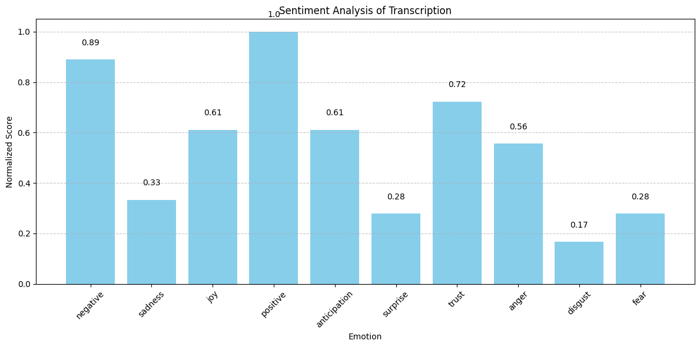

EmoQuant
Home
About
Future
Contact Us
EmoQuant Sentiment Analysis
Choose audio file
Upload and Analyze
Loading...
Processing your audio...
Sentiment Analysis Results

Normalised Sentiment Analysis Result